Unpublished 0.7.0 consumer file review
The owner approved applying the existing shared FileUploadField read-only container refinement to Student and Applicant. Both local node_modules installations now use the same complete packed 0.7.0 candidate as Lecturer; tracked manifests and lockfiles retain released 0.6.2 pins. Read-only fields omit the outer dashed border, padding and upload minimum height; existing cards, filenames, sizes and empty text remain. Editable and temporarily disabled editable fields retain their existing frame and selection/removal controls. No portal CSS override, feature/API/schema change, package publication or deployment is introduced. A fresh npm ci still restores the released pin until candidate publication and consumer upgrades are approved.
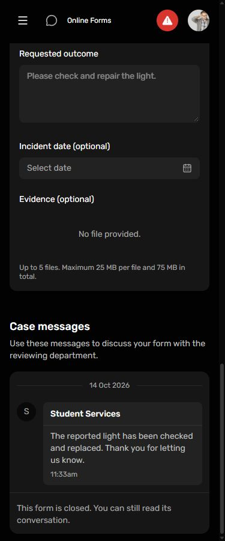
student readonly, 375px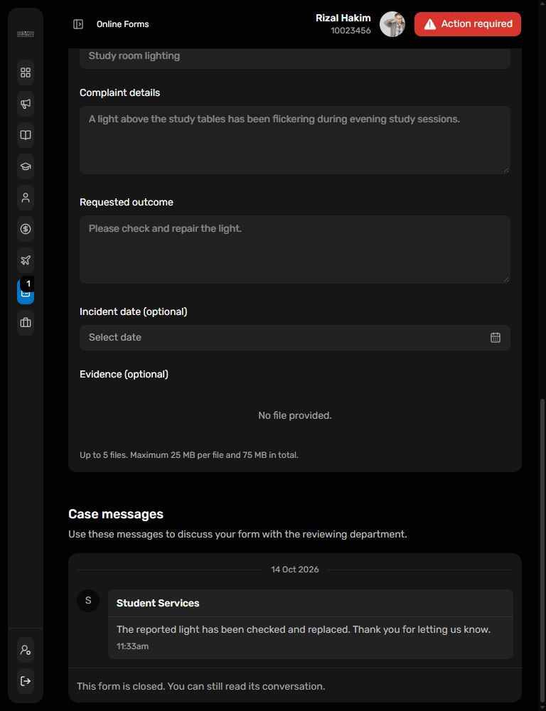
student readonly, 768px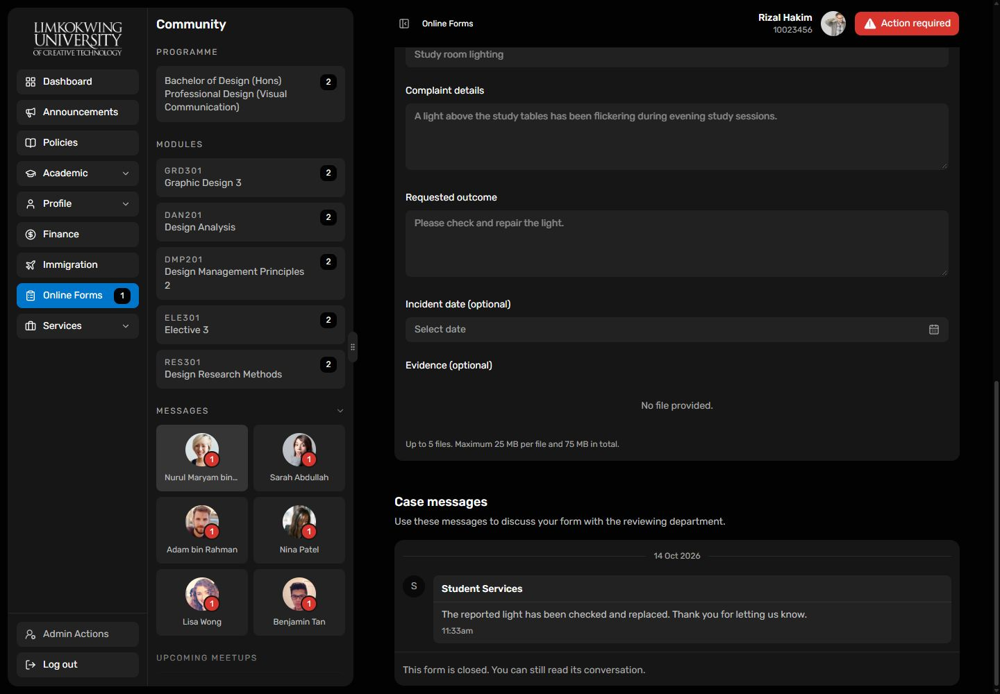
student readonly, 1440px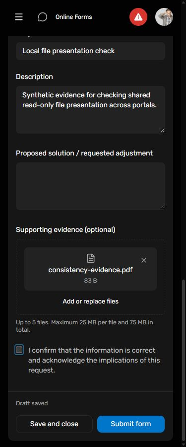
student editable, 375px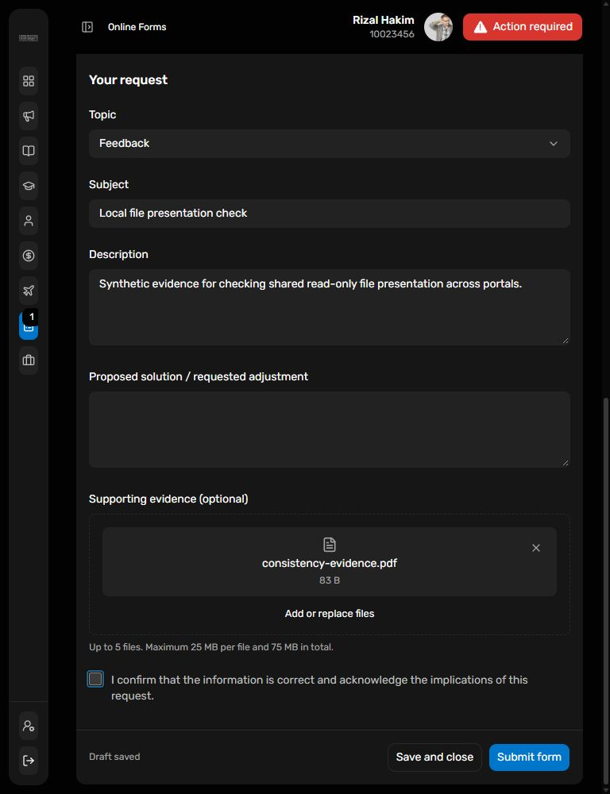
student editable, 768px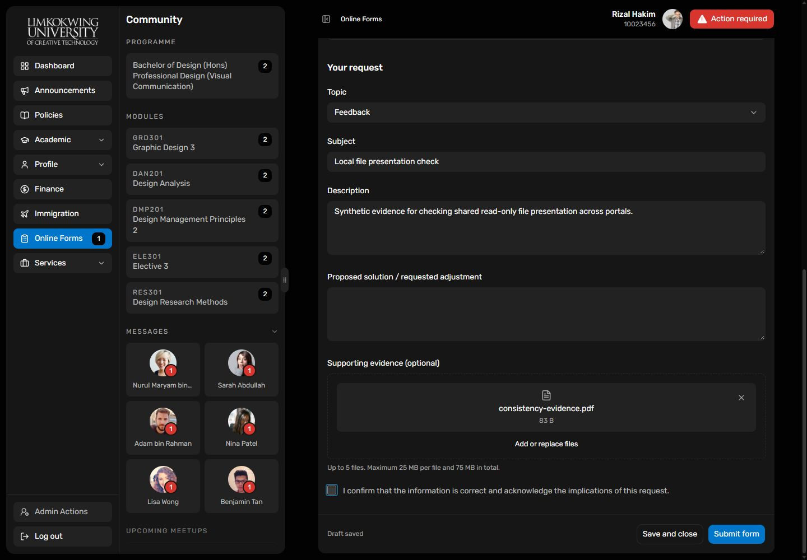
student editable, 1440px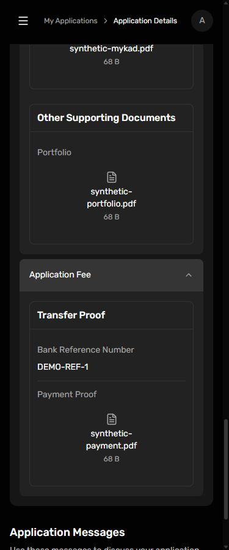
applicant readonly, 375px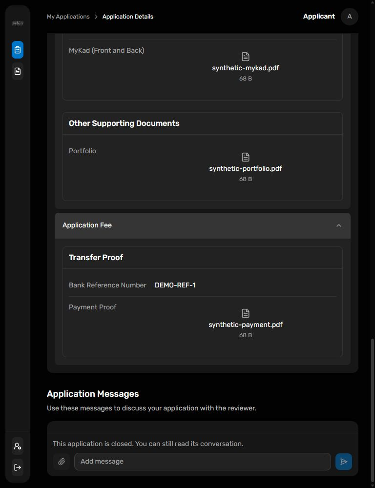
applicant readonly, 768px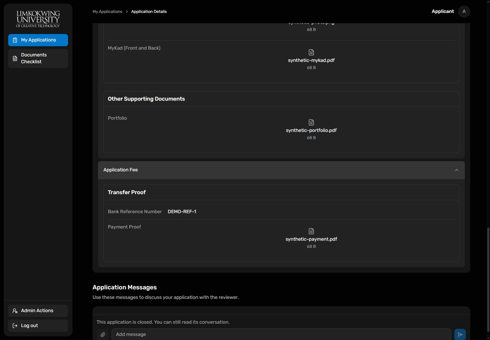
applicant readonly, 1440px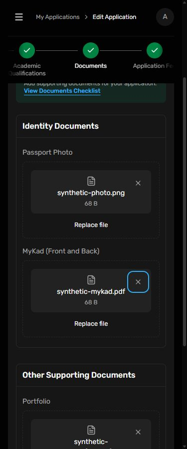
applicant editable, 375px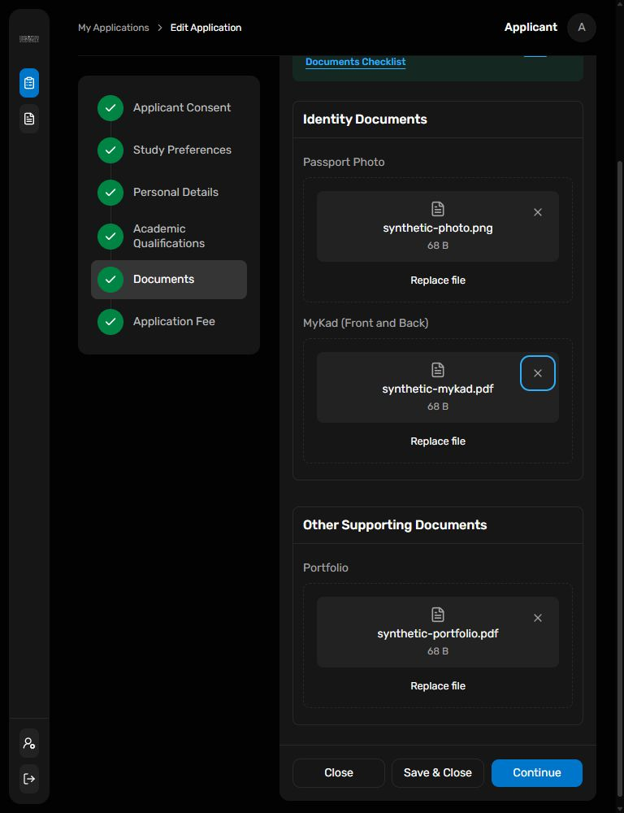
applicant editable, 768px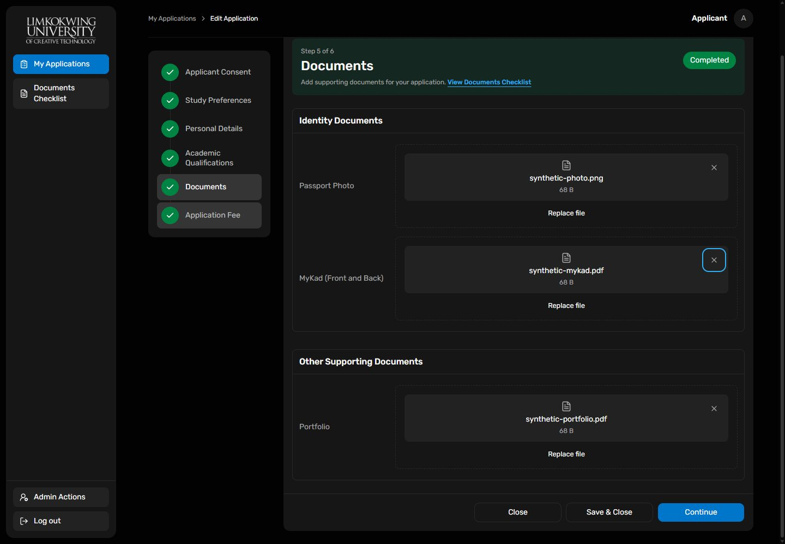
applicant editable, 1440pxFinal verification - 14 October 2026: Student completed token/assets/lint, 797 unit tests, TypeScript/build/production-exclusion/bundle gates and 278 Chromium cases with 46 intentional skips using its existing CI=true resource budget and PLAYWRIGHT_WORKERS=2. That check:all invocation exited nonzero after WebKit passed 40 cases and hit one tablet Personal Profile loading-readiness timeout before checking layout. A subsequent two-worker WebKit run passed that case but hit the existing desktop workflow Space-checkbox check (40 passed, 31 skipped). Each unchanged case passed three isolated retries. The complete unchanged one-worker WebKit rerun then passed 41 cases with 31 intentional skips. All required constituent checks passed, but no uninterrupted Student aggregate success is claimed. Applicant npm run check:all passed 65 unit/component tests and 70 browser cases. Earlier Student attempts hit a sandbox temporary-cache EPERM before tests and an Immigration journey exceeding the ordinary 5-second budget during concurrent load; no source/test changes were made for these retries. Existing Applicant chunk-size, jsdom Window.open and Vite configuration/color-environment advisories remain. Twelve actual responsive consumer captures, package artifact equality, mirror equality and scoped whitespace checks pass. No source/API/schema changes were needed for this style adoption; existing uncommitted work, released pins, publication/deployment boundaries and Lecturer aggregate hold are preserved.